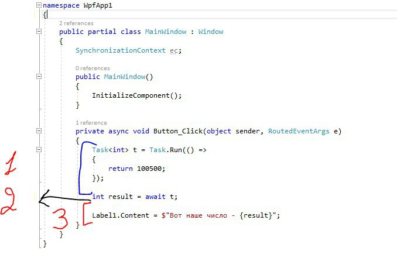

Допустим у нас в таске не просто возврат числа, а некоторая ооочень длительная операция. Если мы выполним все синхронно, то наш UI поток будет занят этими расчетами и не будет обрабатывать очередь сообщений. Т.е. наша программа повиснет на время выполнения нашей задачи.

Но есть ведь асинхронное программирование - давайте воспользуемся await.
1. Выполняем данный кусок кода, как будто это обычный метод
2. Тут (где стрелка) мы завершаем наш метод до получения результата - UI поток освободился и может спокойно обрабатывать очередь сообщений, ничего не виснет ведь метод Button_Click завершен
3. Но тут у нас появился результат и что же делать ? Нам надо опять отработать оставшийся код, но где ? Очевидно что опять в UI потоке, но не в другом, иначе наше приложение вылетит с исключением.
И тут на сцену выходит контекст синхронизации, используя который, наш асинхронный метод знает где ему продолжить выполнение. Поэтому текст нашей метки изменяется без ошибок.
При выполнении асинхронного метода контекст сохраняется (иначе определить где продолжить выполнение невозможно)
Если контекст синхронизации не задан (null) - это значит что нам все равно где будет продолжение (обычно это тредпул). По поводу null все итак ясно, но как указать что нам все равно - явным образом ? И тут разгадка на сегодняшний вопрос.